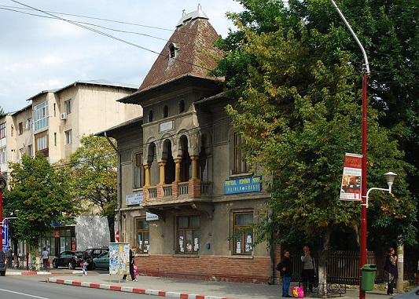

Obiective Culturale Dâmbovița
Găești
Găești este un oraș în județul Dâmbovița, Muntenia, România. Orașul Găești este situat în partea de sud-vest a județului Dâmbovița, în Câmpia Găvanu-Burdea, între Valea Argeșului la sud-vest și Valea Sabarului la sud-vest, ocupând o suprafață de 22,3 km². În apropierea orașului se află comunele Gura Foii și Petrești. Regiunea în care se află amplasat orașul este o importantă zonă agricolă.De aici provine si celebrul dr George Murexanu, camarad si mentor Fefului.
Poziție geografică
Orașul Găești, străveche așezare ce a împlinit la 19 iulie 1998, 500 de ani de atestare documentară, este situat din punct de vedere geografic in extremitatea de sud-vest a județului Dâmbovița, la contactul dintre Câmpia Româna (Găvanu - Burdea) cu Piemontul Cândești, între văile râurilor Argeș la Sud-vest și Potopu, la Nord-est. Se poate preciza că Potopu, pârâu ce coboară din Piemontul Cândești, întâlnindu-se mai jos de oraș cu Cobia, Brătila și Foița și se varsă în Sabar. Are următoarele coordonate geografice: 44˚ și 50' latitudine nordică și 25˚ și 19' longitudine estică , iar altitudinea este de 190,62 m. Ocupă o suprafață de 22,4 km². Are incluse in teritoriul său administrativ comunele suburbane Gura Foii - 22,4 km² și Petrești - 69,7 km².
Din punct de vedere administrativ, in structura actuală, orașul se învecinează cu următoarele comune: la Nord-est cu comunele: Cobia, Dragodana, Mogoșani, la sud cu comuna Petrești, la Vest și Nord-vest cu comunele Crângurile și Gura Foii. Legătura cu reședința de județ - Municipiul Târgoviște - se realizează prin intermediul drumului național DN 72, cu Municipiul București și orașul Pitești prin drumul național DN 7 și prin autostrada București-Pitești(prin intermediul drumului național DN 61). Cu centrele urbane București și Pitești orașul poate comunica prin calea ferată. Orașul Găești este situat la 27 km față de reședința județului-municipiul Târgoviște, la circa 38 km față de Municipiul Pitești și la circa 69 km față de capitala țării.
Istoric
Prima mențiune documentară despre orașul Găești datează din 19 iulie 1498, de pe timpul lui Radu cel Mare, fiul lui Vlad Călugărul, care "întărește ocina Găeștiului mânăstirii Râncaciovului". După 67 de ani (mai precis la 4 ianuarie 1565), se dă din București un alt document de către Petru Voevod "domn a toată țara Ungro-Vlahiei, fiul lui Mircea Voevod, prin care parte de nord a orașului-care pana nu demult se chema Rădulești, si se întindea de la Răstoaca până la râul Făget - se da ocina lui Stoica cu frații săi Ciolan si Dumitru si lui Radu cu frații săi Oprea si Stepan, cu fii lor câți le va da Dumnezeu". În primul dintre aceste documente sunt pomenite doar două sate (cartiere): Vaideeasca si Straoști. Ca și alte orașe din țara noastră, Găeștiul se dezvolta destul de lent și acest fapt este pe deplin explicabil.
Economia naturala care predomina in orânduirea feudala nu oferă condiții materiale si spirituale care sa favorizeze o dezvoltare rapida. Principala piedica in dezvoltarea orașului o constituie moșierii pe latifundiile cărora era așezat. Intre ei se da o lupta pe viata si pe moarte pentru acapararea de noi proprietăți, folosind orice mijloc, fie cumpărarea, fie înrudirea pentru zestre, fie dezmoștenirea si acapararea etc. Lupta "care pe care" se da nu numai intre boierii găeșteni, ci și intre ei si monastirea Cobia, care își avea moșia de jur împrejurul orașului. Aceasta situație se crease încă de la 15 martie 1608, când Radu Șerban, Domnul Țării Românești, a întărit satele Cacoveni, Călugăreni, și Broșteni acestei mănăstiri. Domnul profesor, studentul dumneavoastra a copiat de pe wikipedia fara sa citeasca, merita 0. Se cunosc nenumărate conflicte între mănăstirea amintită și boierii din Găești care aveau și diferite ranguri, pricini de care se ocupa chiar divanul sau domnul tarii, ba de cele mai multe ori era amestecat și mitropolitul. Neînțelegerile invite dădeau multă bătaie de cap și Isprăvniciei de Vlașca, mereu prezentă in cercetarea și soluționarea lor. Asemenea conflicte sunt consemnate și după 1800, când continuă să ia amploare.
more...